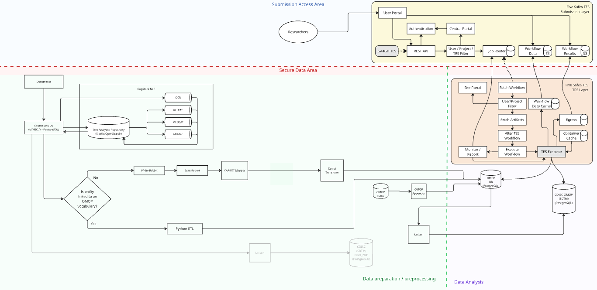

Documentation
Developer resources, technical guides, and relevant links for the TRExt text analytics pipeline.
Technical Architecture
TRExt deploys NLP and data mapping workflows as containerised services within the three-layer TREvolution architecture (Submission Layer, Controller Layer, Execution Layer). Text processing occurs entirely within the TRE Execution Layer. Researchers submit analysis requests via the TES API; outputs pass through disclosure control before egress.

The TRExt pipeline extends TREvolution's three-layer architecture with NLP (MH-TAC, CogStack), concept mapping (Lettuce, Carrot), and data virtualisation (Unison) components in the Execution Layer.
Quick Links
Documentation, source code, and reference material for the tools, standards, and infrastructure that TRExt builds on.
MH-TAC / CRIS NLP
Mental Health Text Analytics Cloud; the containerised NLP platform-as-a-service used by TRExt for clinical entity extraction.
CogStack
Open-source EHR ETL and NLP framework deployed across 6 UK NHS Trusts.
MedCAT
Medical Concept Annotation Tool for SNOMED-CT concept and relation extraction.
Lettuce
LLM-assisted tool for mapping source terms to OMOP vocabulary concepts.
Carrot
Software toolkit for transforming data into OMOP CDM (Carrot-mapper + Carrot-transform).
Unison
Data virtualisation platform enabling OMOP-to-CDISC meta-mapping.
TRE-FX / TREvolution
DARE UK TREvolution infrastructure; the federated TRE technology stack that TRExt extends.
5-Safes Task Execution Service
The interoperability standard used by TREvolution for submitting analysis tasks to TREs.
Federated Analytics Docs
Standards, patterns, and software for secure federated research.
Five Safes RO-Crate
FAIR Digital Objects for provenance capture in federated TRE environments.
Standards & Frameworks
Five Safes Framework
All TRE operations follow the Five Safes: safe people, safe projects, safe settings, safe data, and safe outputs. TRExt implements this via the TREvolution 5-Safes Task Execution Service.
FAIR Data Principles
All datasets and workflows are Findable, Accessible, Interoperable, and Reusable. Provenance metadata is captured throughout the TRExt pipeline using Five Safes RO-Crate.
UK GDPR & Data Protection Act 2018
All activities comply with UK General Data Protection Regulation and the Data Protection Act 2018. CRIS NLP processing has ethics approval from South London and Maudsley NHS Foundation Trust.
DARE UK PIE Guidelines
All public involvement and engagement activities align with the DARE UK PIE Guidelines and the PEDRI (Public Engagement in Data Research Infrastructure) Good Practice Standards.